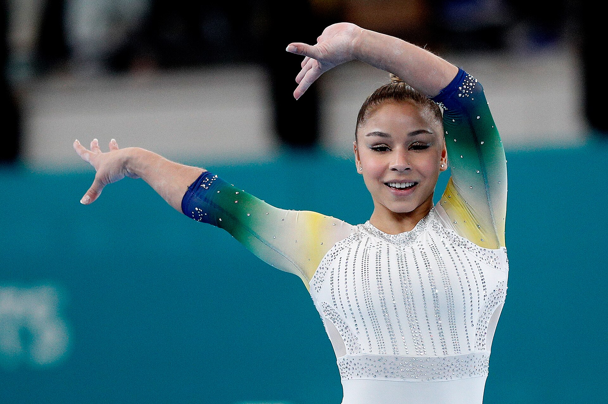

O Brasil encerrou o Campeonato Mundial de Ginástica Artística 2026 com mais uma conquista histórica. Neste domingo, 25 de outubro, Flávia Saraiva ganhou a medalha de bronze na final da trave de equilíbrio, em Roterdã, nos Países Baixos, e realizou um objetivo perseguido durante uma década. Aos 27 anos, a brasileira apresentou uma série de alta dificuldade, e garantiu o terceiro lugar em uma das disputas mais equilibradas do último dia da competição.
A medalha foi a segunda do Brasil no Mundial, depois do ouro de Rebeca Andrade no salto sobre a mesa, conquistado no sábado (24). Com os dois resultados, a seleção brasileira terminou a competição com um ouro e um bronze, reforçando sua presença entre as principais potências da ginástica artística feminina.
A decisão da trave teve uma disputa apertada pelo título. A argelina Kaylia Nemour e a chinesa Zhang Qingying terminaram empatadas, mas Nemour conquistou o ouro pelo critério de desempate, que considera a nota de execução. Flávia completou o pódio, superando ginastas que também chegaram à final com grandes expectativas de medalha.
A conquista do bronze
Flávia chegou à decisão depois de registrar 14,400 pontos nas classificatórias, a terceira melhor nota entre as finalistas. O desempenho já demonstrava que a brasileira tinha condições de disputar as primeiras posições, mas seria necessário repetir a consistência em uma final com adversárias de alto nível técnico.
Na apresentação decisiva, Flávia executou suas principais ligações acrobáticas, incluindo a sequência de flic-flac e dois mortais estendidos, justamente uma combinação na qual havia cometido um erro durante a final do individual geral.
A brasileira apresentou segurança durante boa parte da série, embora tenha sofrido um desequilíbrio no mortal lateral. Mesmo com a falha, conseguiu completar a apresentação sem quedas e recebeu 6,100 pontos de dificuldade e 8,200 de execução, totalizando 14,300.
O treinador Francisco Porath apresentou um recurso para tentar elevar a nota de dificuldade em dois décimos. A arbitragem, porém, manteve a avaliação original, que acabou sendo suficiente para assegurar o bronze.
Flávia chegou a ocupar a segunda colocação provisória. Entretanto, a chinesa Zhang Qingying, última participante da final, recebeu 14,566 pontos e assumiu o segundo lugar, deslocando a brasileira para a terceira posição.
Veja a apresentação abaixo:
Resultado completo da final da trave:
- 1. Kaylia Nemour (Argélia) — 14,566
- 2. Zhang Qingying (China) — 14,566
- 3. Flávia Saraiva (Brasil) — 14,300
- 4. Elena Colas (França) — 14,100
- 5. Manila Esposito (Itália) — 14,066
- 6. Skye Blakely (Estados Unidos) — 13,633
- 7. Qiu Qiyuan (China) — 13,633
- 8. Mana Okamura (Japão) — 12,666
O desempate entre Nemour e Zhang foi um dos momentos mais importantes da decisão. A argelina recebeu 8,266 pontos pela execução, contra 8,066 da chinesa. Embora Zhang tivesse maior nota de dificuldade, 6,500 contra 6,300, a vantagem na execução garantiu o título para Nemour.
Uma medalha que Flávia buscava desde 2016
O bronze de Roterdã tem um significado especial na carreira de Flávia Saraiva. A ginasta disputou sua primeira final olímpica na trave nos Jogos do Rio de Janeiro, em 2016, quando ainda tinha apenas 16 anos. Desde então, consolidou-se como uma das principais representantes brasileiras no aparelho, mas o pódio mundial continuava sendo um objetivo.
No Mundial de 2025, realizado em Jacarta, na Indonésia, Flávia terminou a final da trave em quarto lugar, muito perto de conquistar uma medalha. Um ano depois, conseguiu transformar a experiência acumulada em um resultado histórico.
A conquista deste domingo foi a terceira medalha da brasileira em Campeonatos Mundiais. Em 2023, na Antuérpia, na Bélgica, ela havia conquistado a prata por equipes e o bronze no solo. Agora, acrescentou a primeira medalha mundial na trave ao currículo.
O resultado também igualou a melhor colocação brasileira da história nesse aparelho, alcançada anteriormente por Rebeca Andrade no Mundial de 2023.
Como foi o último dia do Mundial
Além da medalha brasileira, o domingo em Roterdã reuniu decisões importantes no masculino e no feminino. A programação contou com cinco finais por aparelhos: trave e solo entre as mulheres, além de salto, barras paralelas e barra fixa entre os homens.
Estados Unidos fazem dobradinha no solo feminino
A final do solo das mulheres terminou com uma dobradinha dos Estados Unidos. Claire Pease conquistou a medalha de ouro, superando a compatriota Reese Esponda.
A francesa Maiana Prat completou o pódio, a mesma pontuação da britânica Abigail Martin. A francesa levou o bronze pelo critério de desempate.
Resultado do solo feminino:
- 1. Claire Pease (Estados Unidos) — 13,866
- 2. Reese Esponda (Estados Unidos) — 13,566
- 3. Maiana Prat (França) — 13,466
O ouro no salto masculino
No salto sobre a mesa masculino, o armênio Artur Davtyan conquistou o título mundial com média de 14,850 pontos.
O britânico Jake Jarman ficou com a medalha de prata, enquanto o norueguês Sebastian Sponevik garantiu o bronze.
A diferença entre os dois primeiros colocados foi de dois décimos, em uma decisão na qual a execução dos saltos teve grande importância para a classificação.
Resultado do salto masculino:
- 1. Artur Davtyan (Armênia) — 14,850
- 2. Jake Jarman (Grã-Bretanha) — 14,650
- 3. Sebastian Sponevik (Noruega) — 14,366
Zou Jingyuan domina as barras paralelas
A China também teve motivos para comemorar no último dia. Zou Jingyuan conquistou o ouro nas barras paralelas masculinas com uma apresentação avaliada em 15,733 pontos, uma das notas mais altas das finais por aparelhos.
O ginasta terminou com vantagem expressiva sobre o segundo colocado, Illia Kovtun, representante da Croácia, que recebeu 14,900 pontos. Daniel Marinov, da Rússia, completou o pódio.
Resultado das barras paralelas masculinas:
- 1. Zou Jingyuan (China) — 15,733 — ouro
- 2. Illia Kovtun (Croácia) — 14,900 — prata
- 3. Daniel Marinov (Rússia) — 14,866 — bronze
Barra fixa encerra a competição
A barra fixa foi a última decisão do Campeonato Mundial de Ginástica Artística 2026, realizado em Roterdã, nos Países Baixos. O título ficou com Tang Chia-Hung, de Taipé Chinês, conquistando sua primeira medalha de ouro em Campeonatos Mundiais.
A disputa pelas outras duas medalhas foi equilibrada. O japonês Shinnosuke Oka e o russo Sergei Naidin terminaram empatados com 14,800 pontos. Pelo critério de desempate, Oka garantiu a prata, enquanto Naidin ficou com o bronze.
Resultado completo da final da barra fixa:
- 1. Tang Chia-Hung (Taipé Chinês) — 14,966
- 2. Shinnosuke Oka (Japão) — 14,800
- 3. Sergei Naidin (Rússia) — 14,800
- 4. Shohei Kawakami (Japão) — 14,600
- 5. Jesse Moore (Austrália) — 14,433
- 6. Camilo Vera (Colômbia) — 13,333
- 7. Ángel Barajas (Colômbia) — 13,333
- 8. Yumin Abbadini (Itália) — 12,600
Com a definição da barra fixa, todas as 14 finais do Mundial de Ginástica Artística 2026 foram concluídas.
Brasil termina Mundial com ouro e bronze
A campanha brasileira em Roterdã teve dois momentos decisivos nas finais individuais.
O primeiro grande momento brasileiro aconteceu no sábado (24), quando Rebeca Andrade conquistou a medalha de ouro no salto sobre a mesa e alcançou seu terceiro título mundial no aparelho. A ginasta voltou a demonstrar sua força em uma das provas mais importantes de sua carreira, consolidando uma trajetória histórica que pode ser conferida em detalhes na matéria sobre o tricampeonato mundial no salto em 2026. No domingo (25), Flávia Saraiva completou a campanha brasileira com o bronze na trave, garantindo ao país duas medalhas no Mundial de Ginástica Artística.
A vitória representou a décima medalha mundial da carreira de Rebeca, consolidando ainda mais sua posição entre os grandes nomes da história da ginástica artística brasileira.
No domingo (25), Flávia Saraiva acrescentou o bronze na trave e garantiu o segundo pódio brasileiro desta edição.
O Brasil encerrou sua participação com duas medalhas individuais, conquistadas pelas mesmas ginastas que integraram a histórica equipe medalhista de bronze nos Jogos Olímpicos de Paris 2024.
Os campeões do Mundial de Ginástica Artística 2026
A competição, realizada em Roterdã, nos Países Baixos, entre 17 e 25 de outubro, distribuiu 14 títulos mundiais entre disputas por equipes, individual geral e finais por aparelhos. Estados Unidos e China terminaram com três medalhas de ouro cada, enquanto Japão, Armênia e Argélia conquistaram dois títulos. O Brasil também entrou na lista de campeões com Rebeca Andrade no salto sobre a mesa.
Confira todos os campeões mundiais desta edição:
Ginástica artística feminina
- Equipes: China — 165,764
- Individual geral: Skye Blakely (Estados Unidos) — 55,733
- Salto sobre a mesa: Rebeca Andrade (Brasil) — 14,466
- Barras assimétricas: Kaylia Nemour (Argélia) — 15,333
- Trave de equilíbrio: Kaylia Nemour (Argélia) — 14,566
- Solo: Claire Pease (Estados Unidos) — 13,866
Ginástica artística masculina
- Equipes: Japão — 251,928
- Individual geral: Daiki Hashimoto (Japão) — 85,998
- Solo: Frederick Richard (Estados Unidos) — 14,633
- Cavalo com alças: Hamlet Manukyan (Armênia) — 15,300
- Argolas: Lan Xingyu (China) — 14,766
- Salto sobre a mesa: Artur Davtyan (Armênia) — 14,850
- Barras paralelas: Zou Jingyuan (China) — 15,733
- Barra fixa: Tang Chia-Hung (Taipé Chinês) — 14,966
Os Estados Unidos encerraram o Mundial na liderança do quadro de medalhas, com três ouros, três pratas e dois bronzes, totalizando oito pódios. A China ficou em segundo lugar, também com três ouros, além de duas pratas e dois bronzes.
Entre os destaques individuais, Kaylia Nemour foi a única ginasta a conquistar dois títulos em aparelhos nesta edição, vencendo as barras assimétricas e a trave.
Resultados para a ginástica brasileira
O Mundial encerrou a participação brasileira com um resultado importante tanto para o presente quanto para a preparação do próximo ciclo olímpico.
Rebeca Andrade voltou ao topo do pódio mundial no salto, enquanto Flávia Saraiva conquistou uma medalha que faltava em sua carreira. O bronze na trave teve um significado que ultrapassa a posição na classificação: representou dez anos de trabalho desde a primeira final olímpica da ginasta.
O próximo grande desafio coletivo será transformar a experiência de Roterdã em uma campanha capaz de assegurar a classificação olímpica. O quinto lugar por equipes mostrou que o Brasil permanece competitivo, mas também revelou a distância que ainda precisa ser superada em relação às seleções que ocuparam o pódio.
Para Flávia, entretanto, o Mundial de 2026 já ocupa um lugar especial em sua trajetória. Depois de ficar perto da medalha na trave em diferentes oportunidades, a ginasta finalmente conseguiu subir ao pódio no aparelho que marcou sua carreira desde a juventude.
O Brasil saiu de Roterdã com um ouro de Rebeca Andrade e um bronze de Flávia Saraiva. Duas medalhas conquistadas em momentos diferentes, mas com um significado comum: a confirmação de que a ginástica artística brasileira continua produzindo resultados de destaque no cenário mundial.